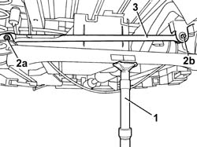

4420C72 REAR SUSPENSION - PANHARD BAR TRANSVERSE MOUNTING STRUT - R.R. CHECK WHEEL GEOMETRY SEPARATELY
- Path
- Procedures > 44 SUSPENSION AND WHEELS > 4420 REAR SUSPENSION > 4420C REAR SUSPENSION STABILIZER BAR/LINKS > 4420C72 REAR SUSPENSION - PANHARD BAR TRANSVERSE MOUNTING STRUT - R.R. CHECK WHEEL GEOMETRY SEPARATELY
- Kind
- repair procedure (removal / refitting; the operation number is the code)
- Applies to
- all engines; all production periods
- Interactive page
- https://sloeber94.github.io/elrnDB-fUlss/en/#/179007389
Applies to: all engines; all production periods
 Removing
Removing
 Refitting
Refitting- Position the vehicle on a lift.
1. Position a hydraulic lift under the rear axle.
2. Using the hydraulic lift, undo and remove the fixing bolts (2a) and (2b).
3. Remove the transverse mounting strut.

Applies to: all engines; all production periods
Refitting
Removing- Position the transverse mounting strut.
- Use the hydraulic lift and position the fixing bolts.
- Tighten the fixing bolts to the recommended torque.
Value da Nm | Fastening | Component | Ø | |
|---|---|---|---|---|
- | 8.0 | Bolt | TRANSFER ANCHORAGE ROD | - |
- Remove the hydraulic lift.
- Remove the vehicle from the lift.